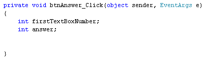

Getting Numbers from Text Boxes
We're going to change tack slightly, here. What we'll do is show you how to get numbers from text boxes, and then use these numbers in your code. You'll need to be able to do this for your calculator project, which is coming up soon!
Start a new project for this one by clicking File > New Project from the menu bar at the top of Visual C#.
Add a text box and a button to your new form. Set the following Properties for the text box (the tb below stands for text box):
Name: tbFirstNumber
Size: 50, 20
Location: 40, 35
Text: 10
And set the following properties for your button:
Name: btnAnswer
Size: 75, 25
Location: 90, 90
Text: Answer
Your form will then look like this:
What we want to do is to get that number 10 from the text box and display it in a message box.
So double click your button to get at the coding window. Your cursor will be flashing inside of the button code. Set up two integer variables at the top of the button code:
int firstTextBoxNumber;
int answer;
Your coding window should look like this:

To get at the number in the text box, we can use the Text property of text boxes. Here's the line of code to add:
firstTextBoxNumber = tbFirstNumber.Text;
This says, find a text box called tbFirstNumber. Access its Text property. When the Text property is retrieved, store it in the variable called firstTextBoxNumber.
To display the number in a message box, add this line:
MessageBox.Show( firstTextBoxNumber.ToString( ) );
Try to Run your code. You should find C# won't run it at all. It will give you the following error:
With text boxes, the thing that you get is, not surprisingly, text. However, we're trying to store the text from the text box into an integer variable. C# won't let you do this - whole numbers belong in integer variables, not text. The error message is telling you that C# can't do the conversion from text to numbers for you - you have to do it yourself!
So we need to convert the text from the text box into an integer. The way you do this is to use something called Parsing. Fortunately, this involves nothing more complex that typing the word "Parse". You can do different types of Parses. Because we need to convert the text into an integer, we need an Integer Parse. So change the line to this:
firstTextBoxNumber = int.Parse( tbFirstNumber.Text );
So you type int, then a full stop. From the IntelliSense menu, you can double click Parse. In between a pair of round brackets, you type the text you want to convert. In our case, the text is coming from a text box. But it doesn't have to. You can do this:
firstTextBoxNumber = int.Parse( "10" );
In the code above, the number is in double quotes. Double quotes mean that it is text. Using int.Parse( ) means that it will be converted to a number that you can store in an integer variable.
Run your programme and you'll find that it works OK now. (You'll have a green wiggly line under answer, but that's just because we haven't used this variable yet.) Click your button and the number 10 will appear in the message box. Type a different number in your text box, and click the button again. The new number should appear in place of the old one.
You can also Parse other types of variable. Like this:
float firstTextBoxNumber;
firstTextBoxNumber = float.Parse( tbFirstNumber.Text );
Or this:
double firstTextBoxNumber
firstTextBoxNumber = double.Parse( tbFirstNumber.Text );
In the first one, we've set up a float variable. We've then used float.Parse( ) to convert the text from the text box, so that it can be stored in the float variable. We've done exactly the same thing in the second example, to convert the text into a double.
Things get more complicated if you accidentally try to store a double value in a float variable - your programme will crash! You need to try to catch things like this with code. (You'll see how to test for errors like this later in the book.)
For now, let's move on.
OK, so we've got text from a text box and displayed it in a message box. What we'll do now is to add a second text box, get numbers from both, use our Math operators, and do some calculations with the two number we took from the text boxes. Sounds complex, but it isn't!
Add a second text box to your form. Set the following Properties for it in the Properties Window:
Name: tbSecondNumber
Size: 50, 20
Location: 165, 35
Text: 5
Your form will then look like this:
Double click the button to get at your code. Now set up another integer variable to hold the second number from the new text box:
int secondTextBoxNumber;
To store the number from the text box in this new variable, add the following line:
secondTextBoxNumber = int.Parse( tbSecondNumber.Text );
This is the same as before - use int.Parse to convert the number from the text box into an integer variable. Then store the number in the new variable.
Let's add the two numbers up, first. We can use the answer variable for this. Here's the code to add:
answer = firstTextBoxNumber + secondTextBoxNumber;
So we're just using the plus symbol ( + ) to add up whatever is in the two variables. The numbers in the variables come from the two text boxes.
Amend your message box line to this:
MessageBox.Show( answer.ToString( ) );
All you need to do is to change the name of the variable that your are converting ToString( ).
Your coding window should look like ours:

Run your programme, and then click the button. You should the answer to the addition in your message box:
Change the numbers in the text boxes, and click your button again. When you've finished playing with your new form, click the red X to return to the code. Here are a few exercises for you to try.
Exercise
Use the textboxes on your form to calculate the following (you'll need to amend
your code for three of them):
1845 + 2858
3450 - 285
35 * 85
5656 / 7
(The answers you should get are: 4703, 3165, 2975 and 808.)
Exercise
Add a new text box to you form. Set up an integer variable to store a third
number. Get the third number from the text box and calculate the following:
(1845 + 2858) - 356
(3450 - 285) * 12
35 * ( 85 - 8 )
(5656 / 7) + 2156
(The answers you should get are: 4347, 37980, 2695 and 2964. You'll have to keep closing the form down. Then add round brackets, the operator symbols, and the new variable.)
Once you've completed the exercises, you can move on to tackling the next project
- your very own calculator!